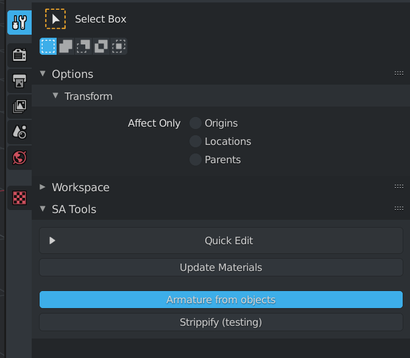
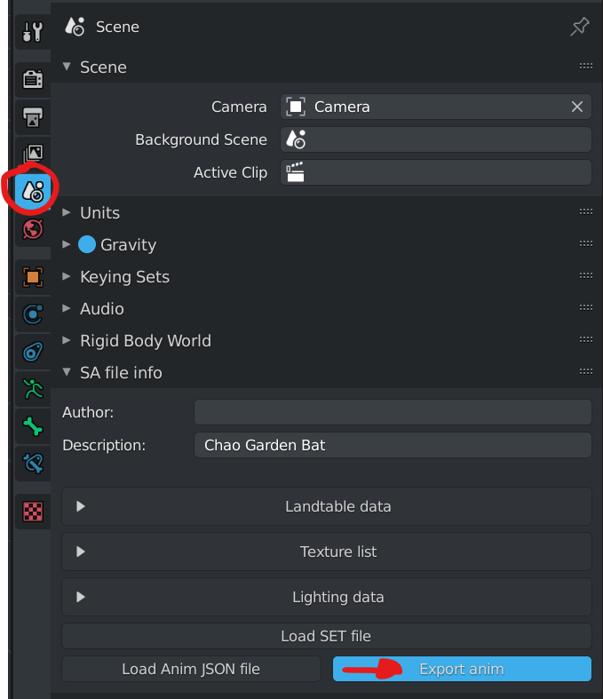
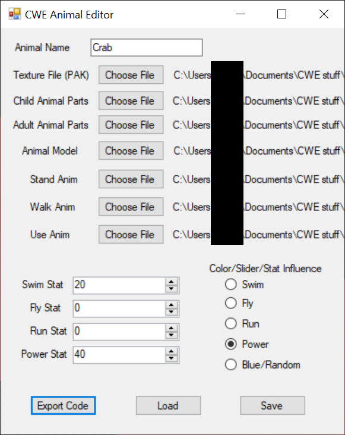

Animals allow you to create animal parts for your Chao - They also allow you to assign the animal to a fruit, so that they can be born from the fruit, much like the SADX fruit in CWE!
All the preparations should be set up from the fruit section, but be sure you have the following:
Import an Animal model from the Objects/Chao World/Common folder in the latest version of your SA Tools project. Any model will do, as long as the prefix is "MINIMAL". This will give you the required scale for an animal model to create.
Create the animal you want to add into the game, using the scale of the imported model as a reference of how large the animal has to be. Be sure to UV and texture the model as necessary.
Create an Empty object at world origin (0, 0, 0) and parent all your animal meshes to the Empty object that was just created. Make sure that your animal's feet are on the "floor" (0 on the Z axis) of the world space, so that the animal appears in the right location.
apply transformations of the model (ctrl+a), and make sure your model is complete at this point. Make sure your origins are correct, since Armature from Objects creates bones from their origins. Move the origins if necessary to their correct positions. If you used modifiers (ie: mirror), this step is necessary. Save your work while doing this (as a reminder)
Select the Empty, and go to the Tool Menu, Armature from Objects. accept the context menu. Your model will now duplicate and create an armature for animation.
Your armature now needs to be tweaked so that the head of each of the bones are in the correct position. Select the head of each of the bones and move them as appropriate in edit mode. This step is optional, but will help for animating your rig when you get to that step.
Save and export your animal as SA2MDL format (make sure to remove everything not associated to the animal beforehand!) - This will be used for Animal Editor.
There are 3 sets of animation for animals:
To animate the model, go to the "Animation" workspace. Set your start frame to 0, and your end frame to how many frames you need -1.
set your initial keyframe at 0 (hint: I key), move the bone in pose mode and then set your ending keyframe. You can make multiple keyframes if needed. Select the animation in the Dope Sheet (both keyframes) and set the Interpolation Mode (hint: T key) to "Linear" - If done correctly, the line between the two points should be green.
Go to Scene, Export Anim to export your animation as JSON. Save the animation name as what you will be using the animation keyframes for.
Repeat the steps for each of the animation pieces.
in the SA Tools/bin directory, you will find "AnimJSONConverter.exe" - This tool will convert the JSON file you exported into the "saanim" format which is needed for the Animal Editor. Drag and drop the animations you created into AnimJSONConverter to generate them.
Import your Child Chao, and prepare it for the animal parts that you want to replace by hiding (hint: h) the objects you want to replace.
The following table is what you should name your parts, so that the game can recognize them when importing with the Animal Editor. Note that these names are case sensitive! Constrain each part to their respective "empty" parent object.
| Body Part | Object Name | Constraint index |
|---|---|---|
| Left Arm | arm_l | 003 |
| Right Arm | arm_r | 010 |
| Left Ear | ear_l | 024 |
| Right Ear | ear_r | 026 |
| Left Leg | leg_l | 006 |
| Right Leg | leg_r | 013 |
| Forehead | forehead | 029 |
| Face | tongue | 028 |
| Tail | tail | 008 |
| Left Wing | wing_l | 037 |
| Right Wing | wing_r | 039 |
Delete the Chao Hierarchy and save as an SA2MDL
OPTIONAL: Do the same for the adult model if you want different models or textures for the adult. Save it as a second SA2MDL
Extract the Animal Editor to a location where you can use it easily, and open it. Load the files according to each of the items that was created in the modelling process. Your completed file should look as follows:
Click "Export Code" and save the .mini file to create a large text file containing your model data that will be used in the next section.
Have a project with fruit ready, and import the CWE_PARTS and CWE_MINIMAL structs from the Animals Main.cpp file you downloaded in this section of the guide. Place it after the "ItemChance" struct so that the struct can be found when the animal code gets added.
Add the following function prototypes to the list of already available function prototypes:
int (*RegisterChaoMinimal)(CWE_MINIMAL* minimalentry);
void (*RegisterChaoMinimalFruit)(int fruitID, int minimalID, int chanceMin, int chanceMax);
Add the following declarations below the HMODULE h = GetModuleHandle(L"CWE"); line of code:
RegisterChaoMinimal = (int (*)(CWE_MINIMAL * minimal_entry))GetProcAddress(h, "RegisterChaoMinimal");
RegisterChaoMinimalFruit = (void (*)(int fruitID, int minimalID, int, int)) GetProcAddress(h, "RegisterChaoMinimalFruit");
Copy your .mini file into your project folder and below the structs you added, #include your .mini file. For example:
#include "crab.mini"
CWELoad(), create an ID for your animal (for example: int CrabID) and then pass it into the following code:
RegisterChaoMinimal(&[AnimalEntry]);
RegisterChaoMinimalFruit([FruitID], [AnimalID], [chanceMin], [chanceMax]);
where &[AnimalEntry] is a reference to the CWE_MINIMAL that was exported, [FruitID] is the ID of the fruit you created to spawn animals, [AnimalID] is the ID you created for your animal, [chanceMin] is a number from 0-100 for a minimal percentage chance, and [chanceMax] is a number from 0-100 for a maximum percentage chance.
Note: If the ranges don't add up to 100%, SADX seals will spawn the remainder of the time. For instance, if a fruit has two animals that can spawn from it, one with spawn chance 0 - 25, and one with spawn chance 75 - 100, SADX seals will fill the remaining 25 - 75, spawning 50% of the time.
Build the DLL for the mod, and finalize the process as you usually would for Fruit. Don't forget to add your animal texture to the mod!